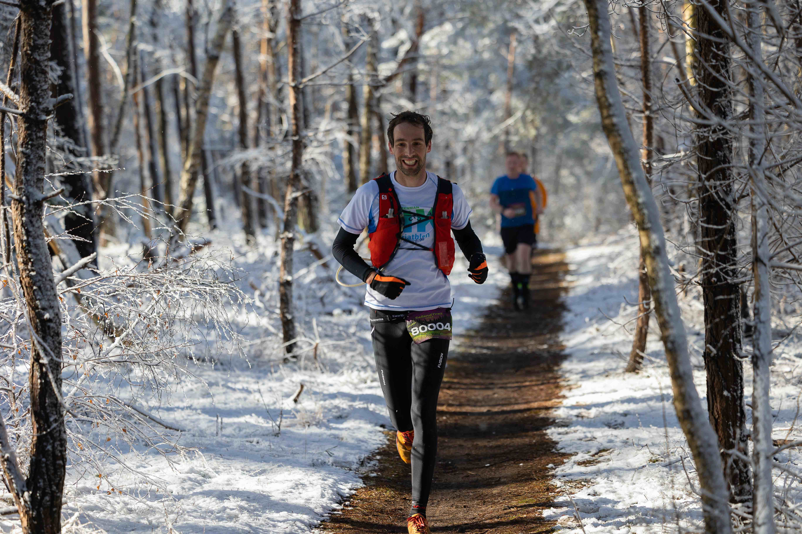

Om 08.00 sta ik in Nijverdal aan de start van de 80km Sallandtrail. Ruim 9 maanden na de “Grand Trail des lacs et Chateaux” en een kleine 9 maanden na de geboorte van Elias. Vanaf 2 januari ben ik weer consequent begonnen met trainen, en de laatste twee weken van 2022 liep ik ook alweer rond de 55km in de week. Ik heb er zin in! Ik voel me goed, mijn horloge zegt ook dat ik uitgerust en fit ben, en van het griepje dat mij 9 dagen geleden nog de hele dag in bed hield merk ik niets meer.
Vanochtend ben ik om 04.30 opgegaan en heb rustig ontbeten met een kopje koffie, 4 (tarwe)boterhammen met chocopasta en een glaasje appelsap. Alle spullen staan al klaar, die heb ik gisteren met Tera ingepakt. Ze kwam ook nog met een heel handig idee hoe ik mijn waterzak efficient kan bijvullen zonder die uit mijn vestje te halen en zonder dat de slang dubbelknikt (daar heb ik nogalleens last van). Om 5.50 in de auto en richting Nijverdal. Ik neem ruim de tijd want na een week regen heeft het gisteren gesneeuwd en vannacht gevroren. Het kan dus nog glad zijn!
De reis gaat voorspoedig en onderweg drink ik nog 500ml sportdrank. Waar het thuis al een beetje wit is, is het in Overijssel ronduit sprookjesachtig: sneeuw en zon. Dat had ik niet meer verwacht begin maart! Eenmaal bij de start lever ik mijn dropbag in (met daarin alleen gels en sportdrank) en kom ik Stein tegen. Hij gaat ook de 80km lopen en we hebben ongeveer hetzelfde raceplan, dus wellicht kunnen we een stukje samenlopen.
Raceplan
Mijn raceplan voor vandaag is duidelijk. Ik wil zo vlak mogelijk lopen, plan is om op 5’/km weg te gaan. Elke 2km een paar slokken sportdrank (500ml/uur), en elk halfuur een gel. Dat komt dan uit op ongeveer 90 gram koolhydraten per uur. Ik start met 2l sportdrank, en vul op het 25km en 50km punt een liter bij (in de zak, niet in de flesjes). Daar pak ik ook nog wat gels. Verder ben ik niet van plan van de posten gebruik te maken.
Start - 25km
Om 08.00 klinkt het startschot ik sta zoals gewoonlijk vooraan en wordt gelijk links en rechts voorbijgelopen. Al snel gaat het linksaf een klein heuveltje op en daar haal ik weer wat mensen in. Ik loop vlack achter Stein en tel de mensen in mijn buurt. Als ik het goed heb loop ik op nu toch weer op plek 4. Nu is het nog overzichtelijk en toch fijn om te weten waar je loopt.
De eerste km klopt aardig met het voorgenomen tempo, maar daarna gaan de kilometers toch wat sneller dan ik in mijn hoofd had. Mijn hartslagmeter zegt ook 170bpm, maar daar geloof ik niets van! Die hoge hartslag bleef overigens de hele dag, dus maar op RPE gelopen. Na een kilometer of twee loopt er iemand richting de twee koplopers en al gauw kom ik daarachter in een groepje van vijf, drie mannen (waaronder Stein) en de eerste twee dames in de race. Het loopt wel lekker in het groepje, maar we lopen wel iets harder dan ik eigenlijk wilde. Dus zelf houdt ik een beetje in. Alleen als het iets omhoog gaat, ik merk dat ik dan wat sneller loop om vervolgens op het vlakke weer voorbij gelopen te worden. Zo verstrijkt het eerste uur. Alles gaat makkelijk en we lopen door de prachtige witte wereld rondom Holten. De eerste drankpost is komen te vervallen, maar dat maakt niets uit want ik was toch niet van plan daar te stoppen. Het tweede uur verloopt vrijwel hetzelfde behalve dat we één dame kwijtraken en we dus met zijn vieren verder lopen.
Langzaamaan begin ik aan de eerste post te denken, dat is doel één. En die komt eerder dan verwacht. Ik dat dat de post pas bij 30km was, maar na 25km zie ik ineens de tenten en de startboog staan. Ik stop bij de dropbags, zie de mijne, doe de gels in mijn vest, vest uit, drinkzak open.. hè irritant, drop van mijn petfles gaat er niet af. Na even klungelen lukt het toch en vul ik de zak. Even vest op de kop om de luchtbel eruit te zuigen (anders gaat het zo klotsen op je rug) en pardoes vallen alle gels er weer uit. Ik zie de rest van mijn groepje alweer vertrekken en zelfs een paar mensen die achter ons lopen staan alweer klaar om te vertrekken. Ok, gels er weer in en weglopen. Dat ging niet heel soepel! Slok nemen… ohnee toch weer die knik in de slang, stoppen? Nee ik loop maar door ik krijg er namelijk wel een beetje doorheen. De eerste 25km gingen super, maar eindigen een beetje stroef…
25 - 50km
Ik weet inmiddels niet meer precies waar ik loop. Al met al heeft de stop zo’n twee minuten gekost en ik zit nu achter een loopster die ik nog niet eerder heb gezien. Ik heb ook wat moeite om mijn tempo weer terug te vinden. Sterker nog ik voel me even wat minder. Ik volg de loopster voor mij en na een tijdje worden we ingehaald door wat ik denk dat de eerste lopers van de 10km zijn. Eentje begint te praten en ik praat wat terug, maar ik merk dat ik het zwaar vind om te praten. Dat is niet echt een heel prettig idee in deze fase van de race. Wel zie ik in de verte de drie lopers uit mijn oude groepje dus ik krijg weer een idee waar ik zit. Tot kilometer 35 voel ik mezelf best matig. Ik baal ook een beetje van de slang die geknikt zit en dat het vullen van de zak wat lastig ging, maar weet ook dat ik mij daar niet te druk over moet maken. Als ik ga mokken wordt het zeker een heel lange dag! Wel lukt het om na een tijdje weer aan te sluiten bij mijn oude groepje. Daarbij kom ik erachter dat ik met mijn rechterhand het slangetje van mijn drinkzak onderin goed kan duwen tijdens het drinken en zo wel wat binnen krijg. Dat is dan weer positief en ik merk dat ik mentaal en fysiek mezelf weer beter begin te voelen. Op naar de volgende stop op 40km!

Zoals gepland ga ik de bevoorrading overslaan, bij de post is het echter heel druk omdat dit ook het punt halverwege de 25km race is. Iemand roept al “80km linksaf” maar ik zie niet precies wat hij bedoelt. De rest van mijn groepje stopt bij de post en ik loop rechtdoor en volg een lijntje op mijn horloge dat voor mijn gevoel naar links gaat. Echter, het voelt niet helemaal goed en opeens zie ik op mijn horloge staan dat het nog ~7km is tot de finish. Shit! Ik draai me om en zie een hele stoet 25km lopers mij tegemoet lopen. Ik loop helemaal terug naar de bevoorrading, vraag om de route en wordt gewezen op een bordje. Ah, ja… dat was inderdaad wel echt linksaf. Stom om niet even rustig te kijken… dat heeft mij een paar minuten gekost. En nu weet ik weer niet waar ik loop. Alleen in tegenstelling tot na de vorige post voel ik me nu wel goed. Ik haal iemand in die ik niet eerder heb gezien - in plaats van wat tijdswinst door niet te stoppen heeft het dus alleen maar tijd gekost - en op een open stuk zie ik weer mijn oude groepje in de verte. Alleen ligt dat nu een beetje uit elkaar. Het stuk dat nu komt kan ik mij nog goed herrinneren van de vorige keer. Er komen wat stukjes door weilanden aan. Langzaamaan kom ik weer iets dichterbij en vlak voor het 50km punt haal ik Stein en de andere jongen uit mijn oude groepje bij. Alleen de eerste dame loopt nog een stuk voor mij.
Bij de 50km post pak ik mijn dropbag en dit keer gaat wel alles goed! Ik gun mezelf een colaatje en 3 tucs en loop als vijfde weer weg bij de post.
50km - finish
Met dit soort lange races helpt het om de race in stukjes op te knippen. Er zijn in mijn hoofd nog twee stukjes over van twee keer 15km. De eerste 15km wordt pittig, met een aantal klimmetjes en komt terug bij de 50km post. Daarna is het nog 15km door naar de finish (die ik stiekem opbreek in het stuk tot de 40km post en de laatste ruim 7km naar de finish).
Maargoed, eerst deze vijftien heuvelachtige kilometers. Voor mij zie ik niemand, vanachter sluit nog één iemand aan. Omhoog gaat niet meer heel makkelijk en ik besluit dus ook voorzichtig te doen op de heuveltjes. Dat kost een beetje tijd, maar jezelf nu opblazen betaal je daarna dubbel terug. Na een kilometer of tien zie ik dat de tweede dame vlak achter ons loopt. De heuveltjes zitten er inmiddels een heel eind op en ik loop langzaam weg bij mijn metgezel richting de post op 50km. Dit stukje was overleven, maar op het vlakke voel ik mij eigenlijk nog steeds best goed!
Op 65km sla ik de post weer over. Dat maakt dat ik de laatste 15km begin vlak voor de eerste dame. Ik moet ook even stoppen om mijn hamstrings te rekken, beide voel ik aardig op spanning staan en ik moet oppassen dat de kramp er niet inschiet. Zij loopt daarnaast iets harder dan ik en haalt mij weer bij. Totaan de finish lopen we ongeveer gelijk op. Omdat ze vooraan loopt fietsen er ook twee mensen van de organisatie in haar buurt. Die maken af en toe een praatje en dat is best prettig. Dit stuk gaat eerst weer door de weilanden om vervolgens het bos in te duiken richting de finish. Op een lang recht stuk zie ik in de verte iemand lopen. Dat kan alleen iemand van de 80km zijn (de 50km komt niet op dit stuk) en moet dus de 3e man in de race zijn. Dat motiveert weer een beetje extra en na een paar minuten haal ik hem in.
Op het vlakke lukt het nogsteeds om 5’/km te lopen, alleen omhoog gaat het iets langzamer. Maar ik voel me nog goed. Bij de laatste post loop ik weer door en nu ben ik op het punt waar ik eerder verkeerd liep. Af en toe halen we nog een 50km loper in. In de laatste twee kilometer volgt nog een zandkuil en pittige klim en daarna kan ik nog aardig doorlopen over de finish. Na 6u49min21s kom ik als 3e over de streep. Net geen 5’/km maar wel dik tevreden met hoe de race verrlopen is! Op een paar kleine foutjes na ging eigenlijk alles volgens plan vandaag en daarnaast was het een prachtige dag. Vooral de eerste 25km toen er nog volop sneeuw lag leverde een schitterend landschap op. Moe maar voldaan ga ik op een bankje zitten, praat na met wat wat mensen van de organisatie en diegene die rond dezelfde tijd gefinished zijn en geniet van twee bekertjes bouillon in de zon.
Heel erg bedankt aan de organisatie voor deze mooie trail!